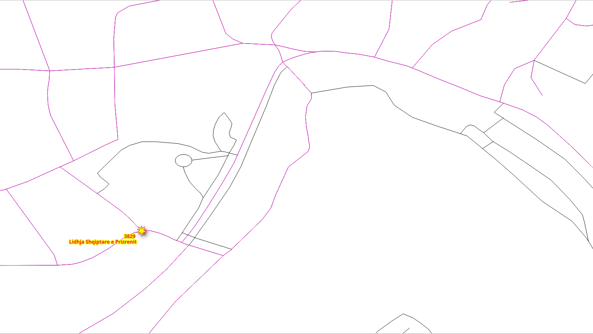
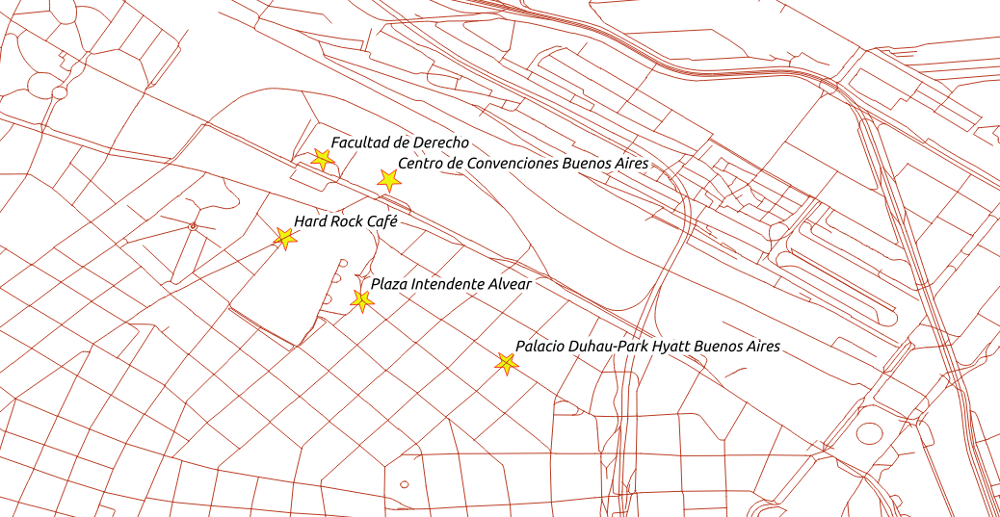
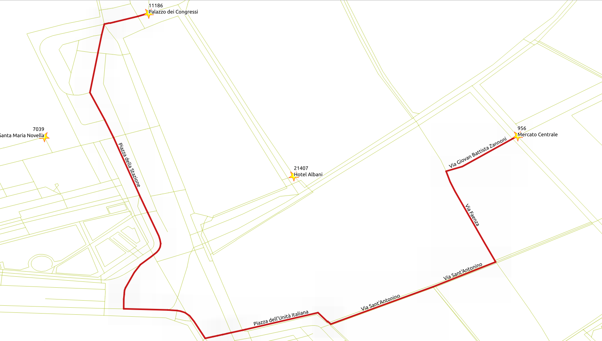
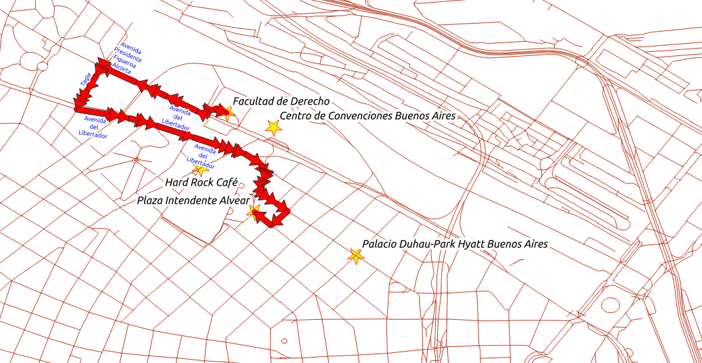
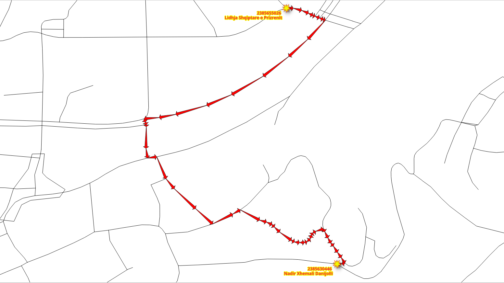
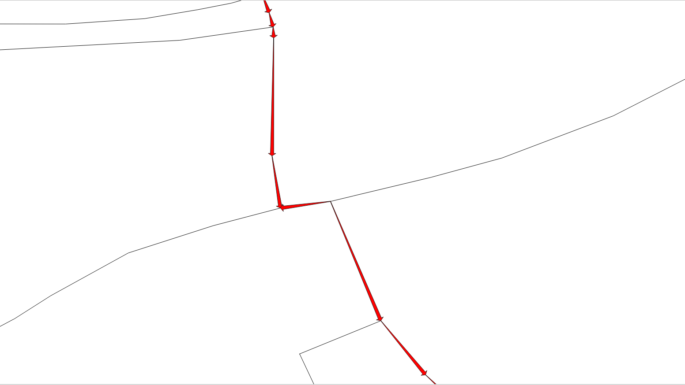
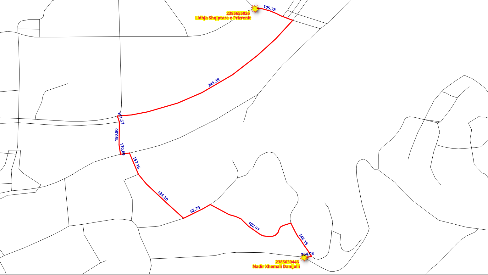

7. Escribir un Procedimiento Almacenado de SQL¶

Chapter Contents
Las funciones pgRouting proporcionan una interfaz de bajo nivel.
Al desarrollar para una aplicación de nivel superior, los requisitos deben estar representados en las consultas SQL. A medida que estas consultas SQL se vuelven más complejas, es conveniente almacenarlas en funciones o procedimientos almacenados de postgreSQL. Los procedimientos o funciones almacenados son una forma eficaz de envolver la lógica de la aplicación, en este caso, relacionada con la lógica y los requisitos de ruteo.
7.1. Los requisitos de aplicación¶
In this chapter there are three requirements that follow the same logic. It consists on 2 types of vehicles and the pedestrian routing:
- Vehículo en particular:
- Circular por toda la zona de Buenos Aires. - No usar steps, footway, path.
- La velocidad es la velocidad predeterminada de la información de OSM.
- Taxi vehicle:
- Circular en un área más pequeña cerca de «Centro de Convenciones Buenos Aires».
- Bounding box:
(-58.41,-34.58,-58.37,-34.55) - No usar steps, footway, path
- Bounding box:
- La velocidad es 10% más lenta que la de los vehículos Particulares.
- Circular en un área más pequeña cerca de «Centro de Convenciones Buenos Aires».
- Peatones:
- Caminar en toda el área de Buenos Aires.
- No se puede circular en autopistas ni en segmentos primarios.
- La velocidad es de
2 mts/sec.
- Una interfaz necesita la siguiente información de ruteo:
- seq - Un identificador único de las filas.
- gid - El identificador del segmento
- name - El nombre del segmento
- length - La longitud del segmento
- seconds - Número de segundos para atravesar el segmento
- azimuth - El azimuth del segmento
- route_geom - La geometría del ruteo
- route_readable - La geometría en forma humanamente legible.
and it needs to work based on the graph, and the OSM identifiers of the vertices.
Diseño de la función
La función wrk_dijkstra se creará con los siguientes parámetros de entrada y columnas de salida:
Parámetros de entrada
| Nombre | Tipo | Descripción |
|---|---|---|
| edges_subset | REGCLASS | La tabla/vista que se utilizará para procesar |
| source_osm | BIGINT | El identificador OSM de la ubicación de la salida. |
| target_osm | BIGINT | El identificador OSM de la ubicación del destino. |
columnas de salida
| Nombre | Tipo | Descripción |
|---|---|---|
| seq | INTEGER | Un único número para cada fila de resultados |
| id | BIGINT | EL identificador de arista |
| name | TEXT | El nombre del segmento. |
| segundos | FLOAT | El número de segundos que se tarda en atravesar el segmento. |
| azimuth | FLOAT | El azimuth del segmento. |
| length_m | FLOAT | Longitud en metros del segmento. |
| route_readable | TEXT | La geometría en forma humanamente legible. |
| route_geom | geometría | La geometría del segmento en la dirección correcta. |
7.2. Preparación de grafos de procesamiento¶
7.2.1. Ejercicio 1: Creación de una vista para el ruteo¶
{kind=link}
Problema
- Cree una vista con una cantidad mínima de información para procesar los vehículos en particular.
- El ruteo de cost y reverse_cost será en segundos para los cálculos de ruteo.
- Excluir los segmentos de pasos, senda, recorrido
- Datos necesarios en la vista para su posterior procesamiento.
- length_m La longitud en metros.
- the_geom La geometría|.
- Comporbar que se ha reducido el número de aristas.
Solución
Creación de la vista:
- Los requisitos de source and target para la función deben ser con identificadores OSM. (línea 6)
costyreverse_costson en términos de segundos. (línea 7)- Los parámetros adicionales length_m y the_geom. (línea 8)
JOINcon configuration:- Excluir pasos, senda, recorrido. (line 11)
- Si necesita reconstruir la vista, primero usando el comando en línea 1.
1 2 3 4 5 6 7 8 9 10 11
-- DROP VIEW vehicle_net CASCADE; CREATE VIEW vehicle_net AS SELECT gid AS id, source_osm AS source, target_osm AS target, cost_s AS cost, reverse_cost_s AS reverse_cost, name, length_m, the_geom FROM ways JOIN configuration AS c USING (tag_id) WHERE c.tag_value NOT IN ('steps','footway','path');
Verificación:
- Contar las filas en los
caminosoriginales (línea 1) - Contar las filas en la vista
vehicle_net(línea 2)
1 2
SELECT count(*) FROM ways; SELECT count(*) FROM vehicle_net;
- Contar las filas en los
Resultados de la consulta para el ejercicio 1 del capítulo 7
7.2.2. Ejercicio 2: Limitar la red viaria dentro de un área¶
{kind=link}
Problema
- Cree una vista
taxi_netpara el taxi:- The taxi can only circulate inside this Bounding Box:
(-58.41,-34.58,-58.37,-34.55) - La velocidad del taxi es un 10% más lenta que el vehículo en particular.
- The taxi can only circulate inside this Bounding Box:
- Verifique el número reducido de segmentos de carretera.
Solución
Creación de la vista:
- El grafo del taxi es un subconjunto del grafo
vehicle_net. (línea 9) - Can only circulate inside the bounding box:
(-58.41,-34.58,-58.37,-34.55). (line 10) - Ajuste el
costyreverse_costdel taxi para que sea el 90% del vehículo en particular. (línea 7)
1 2 3 4 5 6 7 8 9 10
-- DROP VIEW taxi_net; CREATE VIEW taxi_net AS SELECT id, source, target, cost * 0.90 AS cost, reverse_cost * 0.90 AS reverse_cost, name, length_m, the_geom FROM vehicle_net WHERE vehicle_net.the_geom && ST_MakeEnvelope(-58.41,-34.58,-58.37,-34.55);
- El grafo del taxi es un subconjunto del grafo
Verificación:
- Cuente las filas en el
taxi_netoriginal.
1SELECT count(*) FROM taxi_net;
- Cuente las filas en el
Resultados de la consulta para el ejercicio 2 del capítulo 7
7.2.3. Exercise 3: Creating a materialized view for routing pedestrians¶

Problema
- Crear una vista materializada con una cantidad mínima de información para procesar peatones.
- El ruteo de cost y reverse_cost será en segundos para los cálculos de ruteo.
- La velocidad es de
2 mts/sec.
- La velocidad es de
- Excluir segmentos de autopista y primarios.
- Datos necesarios en la vista para su posterior procesamiento.
- length_m La longitud en metros.
- the_geom La geometría|.
- Comporbar que se ha reducido el número de aristas.
Solución
Creación de la vista:
- Similar a Ejercicio 1: Creación de una vista para el ruteo:
costyreverse_costse expresan en términos de segundos con velocidad de2 mts/sec. (línea 7)- Excluir autopista, primaria. (línea 11)
1 2 3 4 5 6 7 8 9 10 11
-- DROP MATERIALIZED VIEW walk_net; CREATE MATERIALIZED VIEW walk_net AS SELECT gid AS id, source_osm AS source, target_osm AS target, length_m / 2 AS cost, length_m / 2 AS reverse_cost, name, length_m, the_geom FROM ways JOIN configuration AS c USING (tag_id) WHERE c.tag_value NOT IN ('motorway','primary');
- Similar a Ejercicio 1: Creación de una vista para el ruteo:
Verificación:
- Count the rows on the view
walk_net(line 1)
1SELECT count(*) FROM walk_net;
- Count the rows on the view
Resultados de la consulta para el ejercicio 3 del capítulo 7
7.2.4. Ejercicio 4: Probar las vistas para el ruteo¶

Problema
- Pruebe las vistas creadas
En particular:
- From the «Facultad de Derecho» to the «Plaza Intendente Alvear» using the OSM identifier
- las vistas a probar son:
vehicle_nettaxi_netwalk_net
- Mostrar únicamente los siguientes resultados, ya que las demás columnas deben omitirse en la función.
seqedgecon el nombreidcostcon el nombre:seconds
Solución
En general
- El punto de partida es «Facultad de Derecho» con el identificador OSM
2153015792. - El destino es «Plaza Intendente Alvear» con el identificador OSM
192903446.
- El punto de partida es «Facultad de Derecho» con el identificador OSM
For
vehicle_net:- Se utiliza
vehicle_net. - La selección de las columnas con los nombres correspondientes está en línea 1.
- La vista se prepara con los nombres de columna que pgRouting utilizan.
- No es necesario cambiar el nombre de las columnas. (línea 3)
- Se utilizan los identificadores OSM del punto de partida y del destino. (línea 4)
1 2 3 4
SELECT seq, edge AS id, cost AS seconds FROM pgr_dijkstra( 'SELECT * FROM vehicle_net', 2153015792, 192903446);
- Se utiliza
Para
taxi_net:- Similar al anterior pero con
taxi_net(línea 3) - Los resultados dan la misma ruta que con
vehicle_netperocostes mayor
1 2 3 4
SELECT seq, edge AS id, cost AS seconds FROM pgr_dijkstra( 'SELECT * FROM taxi_net', 2153015792, 192903446);
- Similar al anterior pero con
Para
walk_net:- Similar al anterior pero con
walk_net. (línea 3) - Los resultados dan una ruta diferente a la de los vehículos.
1 2 3 4
SELECT seq, edge AS id, cost AS seconds FROM pgr_dijkstra( 'SELECT * FROM walk_net', 2153015792, 192903446);
- Similar al anterior pero con
Nota
From these queries, it can be deduced that what we design for one view will work
for the other views. On the following exercises only vehicle_net will be used, but
you can test the queries with the other views.
Resultados de la consulta para el ejercicio 4 del capítulo 7
7.2.5. Ejercicio 5: Obtener información adicional¶
{kind=link}
Problema
- Desde Facultad de Derecho hasta Plaza Intendente Alvear, utilizando identificadores OSM.
- además de Ejercicio 4: Probar las vistas para el ruteo resultados también obtienen información que se encuentra en el subconjunto de bordes:
namelength_m
Solución
- La consulta de Ejercicio 4: Probar las vistas para el ruteo se utiliza como una subconsulta denominada
results(no líneas resaltadas 5 a 9) - La cláusula
SELECTcontiene- Todas las columnas de
results. (línea 2) - Los valores
nameylength_m. (línea 3)
- Todas las columnas de
- A
LEFT JOINwithvehicle_netis needed to get the additional information. (line 10)- Has to be
LEFTbecause there is a row withid = -1that does not exist onvehicle_net
- Has to be
1 2 3 4 5 6 7 8 9 10 11 12 | SELECT
results.*,
name, length_m
FROM (
SELECT seq, edge AS id, cost AS seconds
FROM pgr_dijkstra(
'SELECT * FROM vehicle_net',
2153015792, 192903446)
) AS results
LEFT JOIN vehicle_net
USING (id)
ORDER BY seq;
|
Resultados de la consulta para el ejercicio 5 del capítulo 7
7.3. Manejo de geometría¶
7.3.1. Ejercicio 6: Geometría de la ruta (legible para humanos)¶

Problema
- Desde «Facultad de Derecho» hasta «Plaza Intendente Alvear», además, se obtiene la geometría en forma legible por humanos.
- Además de Ejercicio 4: Probar las vistas para el ruteo resultados también obtener información encontrada en el subconjunto de bordes de:
the_geomen forma legible por humanos nombrado comoroute_readable
- Además de Ejercicio 4: Probar las vistas para el ruteo resultados también obtener información encontrada en el subconjunto de bordes de:
Truco
WITH proporciona una manera de escribir instrucciones auxiliares en consultas más grandes. Se puede considerar como la definición de tablas temporales que existen solo para una consulta.
Solución
- La consulta de Ejercicio 4: Probar las vistas para el ruteo se utiliza como una subconsulta denominada
resultsesta vez en una cláusula WITH. (líneas no resaltadas 2 a 6) - La cláusula
SELECTcontiene:- Todas las columnas de
results. (línea 8) - El
the_geomprocesado conST_AsTextpara obtener la forma legible por humanos. (línea 9)- Cambia el nombre del resultado a
route_readable
- Cambia el nombre del resultado a
- Todas las columnas de
- Like before
LEFT JOINwithvehicle_net. (line 11)
1 2 3 4 5 6 7 8 9 10 11 12 13 | WITH results AS (
SELECT seq, edge AS id, cost AS seconds
FROM pgr_dijkstra(
'SELECT * FROM vehicle_net',
2153015792, 192903446)
)
SELECT
results.*,
ST_AsText(the_geom) AS route_readable
FROM results
LEFT JOIN vehicle_net
USING (id)
ORDER BY seq;
|
Resultados de la consulta para el ejercicio 6 del capítulo 7
7.3.2. Ejercicio 7: Geometría de ruta (formato binario)¶
{kind=link}
Problema
- Desde «Facultad de Derecho» hasta «Plaza Intendente Alvear», la geometría en formato binario.
- Además de Ejercicio 4: Probar las vistas para el ruteo resultados también obtener información encontrada en el subconjunto de bordes de:
the_geomen formato binario con el nombreroute_geom
- Además de Ejercicio 4: Probar las vistas para el ruteo resultados también obtener información encontrada en el subconjunto de bordes de:
Solución
- La consulta de Ejercicio 6: Geometría de la ruta (legible para humanos) utilizada;
- La cláusula
SELECTcontiene:- The
the_geomincluding the renaming (line 9)
- The
1 2 3 4 5 6 7 8 9 10 11 12 13 | WITH results AS (
SELECT seq, edge AS id, cost AS seconds
FROM pgr_dijkstra(
'SELECT * FROM vehicle_net',
2153015792, 192903446)
)
SELECT
results.*,
the_geom AS route_geom
FROM results
LEFT JOIN vehicle_net
USING (id)
ORDER BY seq;
|
Resultados de la consulta para el ejercicio 7 del capítulo 7
7.3.3. Ejercicio 8: Direccionalidad de la geometría de la ruta¶
{kind=link}
Inspeccionando la imagen detallada de Ejercicio 7: Geometría de ruta (formato binario) hay flechas que no coinciden con la direccionalidad de la ruta.
{kind=link}
Inspeccionar el detalle de los resultados de Ejercicio 6: Geometría de la ruta (legible para humanos)
- Para tener una direccionalidad correcta, el punto final de una geometría debe coincidir con el punto inicial de la geometría siguiente
- Las líneas 2 y 3 no coinciden con ese criterio
2 | 11875 | 2.1797689059943934 | LINESTRING(-58.3930552 -34.5828417,-58.3927465 -34.5827453)
3 | 2492 | 2.020891103424378 | LINESTRING(-58.3930552 -34.5828417,-58.3930944 -34.5828972,-58.3931786 -34.5830165)
4 | 12194 | 2.206902577638243 | LINESTRING(-58.3931786 -34.5830165,-58.3935264 -34.5828516)
Problema
- Desde «Facultad de Derecho» hasta «Plaza Intendente Alvear»,
- Además de Ejercicio 4: Probar las vistas para el ruteo resultados también obtener información encontrada en el subconjunto de bordes de:
the_geomen forma legible por humanos nombrado comoroute_readablethe_geomen formato binario con el nombreroute_geom- Ambas columnas deben tener la geometría fija para la direccionalidad.
- Además de Ejercicio 4: Probar las vistas para el ruteo resultados también obtener información encontrada en el subconjunto de bordes de:
Solución
- Para obtener la dirección correcta, algunas geometrías deben invertirse:
- Reversing a geometry will depend on the
nodecolumn of the query to dijkstra (line 3)- Ese
nodono es necesario en la salida de la consulta, por lo que se nombra explícitamente las columnas necesarias en la línea 9.
- Ese
- Una instrucción condicional
CASEque devuelve la geometría en forma legible por humanos:- De la geometría cuando
nodees la columnasource. (línea 11) - De la geometría invertida cuando
nodeno es la columnasource. (línea 12)
- De la geometría cuando
- Una instrucción condicional
CASEque devuelve:- La geometría invertida cuando
nodeno es la columnasource. (línea 16) - La geometría cuando
nodees la columnasource. (línea 17)
- La geometría invertida cuando
- Reversing a geometry will depend on the
1 2 3 4 5 6 7 8 9 10 11 12 13 14 15 16 17 18 19 20 21 22 | WITH results AS (
SELECT seq, edge AS id, cost AS seconds,
node
FROM pgr_dijkstra(
'SELECT * FROM vehicle_net',
2153015792, 192903446)
)
SELECT
seq, id, seconds,
CASE
WHEN node = source THEN ST_AsText(the_geom)
ELSE ST_AsText(ST_Reverse(the_geom))
END AS route_readable,
CASE
WHEN node = source THEN the_geom
ELSE ST_Reverse(the_geom)
END AS route_geom
FROM results
LEFT JOIN vehicle_net USING (id)
ORDER BY seq;
|
Resultados de la consulta para el ejercicio 8 del capítulo 7
7.3.4. Ejercicio 9: Uso de la geometría¶
{kind=link}
Hay muchas funciones de geometría en PostGIS, el taller ya cubrió algunas de ellas como ST_AsText, ST_Reverse, ST_EndPoint, etc. Este ejercicio hará uso de una función adicional ST_Azimuth.
Problema
- Modifique la consulta de Ejercicio 8: Direccionalidad de la geometría de la ruta.
- Además, obtenga el azimut de la geometría correcta.
- mantenga la salida pequeña:
- Incluso que otras columnas se calculan solo como salida:
seq,id,secondsy elazimuth
- Incluso que otras columnas se calculan solo como salida:
- Dado que
vehicle_netes un subgrafo deways, realizar elJOINconways.
Solución
- Mover la consulta que obtiene la información adicional en la instrucción
WITH.- Asígnele el nombre
adicional. (línea 9)
- Asígnele el nombre
- Las instrucciones
SELECTfinales obtienen:- La información solicitada. (línea 25)
- Calcula el azimut de
route_geom. (línea 26)
1 2 3 4 5 6 7 8 9 10 11 12 13 14 15 16 17 18 19 20 21 22 23 24 25 26 27 28 | WITH
results AS (
SELECT seq, edge AS id, cost AS seconds,
node
FROM pgr_dijkstra(
'SELECT * FROM vehicle_net',
2153015792, 192903446)
),
additional AS (
SELECT
seq, id, seconds,
CASE
WHEN node = source THEN ST_AsText(the_geom)
ELSE ST_AsText(ST_Reverse(the_geom))
END AS route_readable,
CASE
WHEN node = source THEN the_geom
ELSE ST_Reverse(the_geom)
END AS route_geom
FROM results
LEFT JOIN ways ON (gid = id)
)
SELECT seq, id, seconds,
degrees(ST_azimuth(ST_StartPoint(route_geom), ST_EndPoint(route_geom))) AS azimuth
FROM additional
ORDER BY seq;
|
Resultados de la consulta para el ejercicio 9 del capítulo 7
7.4. Crear la función¶
La siguiente función simplifica (y establece los valores por defecto) cuando se llama a la función del camino más corto de Dijkstra.
Advertencia
pgRouting utiliza una gran sobrecarga de funciones:
- Evite crear funciones con un nombre de una función de enrutamiento pgRouting
- Evite el nombre de una función para comenzar con pgr_, _pgr o ST_
7.4.1. Ejercicio 10: Función para una aplicación¶
Problema
Poner todo junto en una función SQL
- nombre de función
wrk_dijkstra - Debe funcionar para cualquier vista dada.
- Permitir una vista como parámetro
- Se puede utilizar una tabla si las columnas tienen los nombres correctos.
- Permitir una vista como parámetro
sourceytargetson en términos deosm_id.- El resultado debe cumplir los requisitos indicados al principio del capítulo
Solución
- La firma de la función:
- Los parámetros de entrada son de la línea 4 a 6.
- Las columnas de salida van de la línea 7 a 14 (sin resltar).
- La función devuelve un conjunto. (línea 16)
1 2 3 4 5 6 7 8 9 10 11 12 13 14 15 16 | -- DROP FUNCTION wrk_dijkstra(regclass, bigint, bigint);
CREATE OR REPLACE FUNCTION wrk_dijkstra(
IN edges_subset REGCLASS,
IN source BIGINT, -- in terms of osm_id
IN target BIGINT, -- in terms of osm_id
OUT seq INTEGER,
OUT id BIGINT,
OUT seconds FLOAT,
OUT name TEXT,
OUT length_m FLOAT,
OUT route_readable TEXT,
OUT route_geom geometry,
OUT azimuth FLOAT
)
RETURNS SETOF record AS
|
- El cuerpo de la función:
- Anexar el nombre de la vista en la línea 7 en la consulta
SELECTapgr_dijkstra. - Using the data to get the route from
sourcetotarget. (line 8) - The
JOINwithwaysis necessary, as the views are subset ofways(line 25)
- Anexar el nombre de la vista en la línea 7 en la consulta
1 2 3 4 5 6 7 8 9 10 11 12 13 14 15 16 17 18 19 20 21 22 23 24 25 26 27 28 29 30 31 32 | $BODY$
WITH
results AS (
SELECT seq, edge AS id, cost AS seconds,
node
FROM pgr_dijkstra(
'SELECT * FROM ' || edges_subset,
source, target)
),
additional AS (
SELECT
seq, id, seconds,
name, length_m,
CASE
WHEN node = source THEN ST_AsText(the_geom)
ELSE ST_AsText(ST_Reverse(the_geom))
END AS route_readable,
CASE
WHEN node = source THEN the_geom
ELSE ST_Reverse(the_geom)
END AS route_geom
FROM results
LEFT JOIN ways ON (gid = id)
)
SELECT *,
degrees(ST_azimuth(ST_StartPoint(route_geom), ST_EndPoint(route_geom))) AS azimuth
FROM additional
ORDER BY seq;
$BODY$
LANGUAGE 'sql';
|
Resultados de la consulta para el ejercicio 10 del capítulo 7
7.4.2. Ejercicio 11: Uso de la función¶
Problema
- Probar la función con las tres vistas
- Desde «Facultad de Derecho» hacia Plaza Intendente Alvear utilizando el identificador OSM
Solución
- Usar la función en la instrucción
SELECT - El primer parámetro cambia en función de la vista que se va a probar
1 2 3 4 5 6 7 8 | SELECT *
FROM wrk_dijkstra('vehicle_net', 2153015792, 192903446);
SELECT *
FROM wrk_dijkstra('taxi_net', 2153015792, 192903446);
SELECT *
FROM wrk_dijkstra('walk_net', 2153015792, 192903446);
|
Resultados de la consulta para el ejercicio 11 del capítulo 7
For you to try
- Pruebe la función con una combinación de los lugares interesantes:
192903446Plaza Intendente Alvear4289340366Hard Rock Café2153015792Facultad de Derecho6357258588Centro de Convenciones Buenos Aires196017392Palacio Duhau-Park Hyatt Buenos Aires